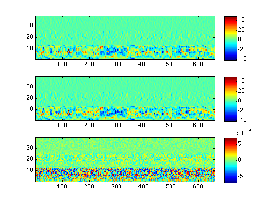

calc_mfcc - Emulation of HTK's MFCC calculation
calc_mfcc is a (compiled) Matlab script that calculates MFCC features, attempting to duplicate a particular configuration of MFCC's HCopy.
The code is based on my rastamat package that attempts to mimic a lot of well-known MFCC variants, but this version has a few extra tweaks to make it closer to HTK output.
The specific HTK configuration we're aiming to copy is this:
TARGETRATE = 100000.0 SOURCEFORMAT = WAV TARGETKIND = MFCC_0_D_A_Z ENORMALISE = T USEPOWER = T ZMEANSOURCE = T SAVECOMPRESSED = T SAVEWITHCRC = T USEHAMMING = T WINDOWSIZE = 250000.0 CEPLIFTER = 22 NUMCHANS = 26 NUMCEPS = 12 BYTEORDER = VAX PREEMCOEF = 0.97
Contents
Example Usage
The Matlab script can be run from the Matlab prompt, or using the included Unix shell wrapper, run_calc_mfcc.sh:
% Run it over our demo file calc_mfcc test.wav test.out % Plot the result d = textread('test.out'); subplot(311) imagesc(d(:,3:end)'); axis xy colorbar % Compare to HTK output h = textread('test-htk.out'); subplot(312) imagesc(h(:,3:end)'); axis xy colorbar % and difference subplot(313) imagesc(h(:,3:end)'-d(:,3:end)'); axis xy colorbar % Quantify mean(mean(abs(h(:,3:end)-d(:,3:end))))/mean(mean(abs(h(:,3:end))))
ans = 2.9091e-05
Installation
This package has been compiled for several targets using the Matlab compiler. You will also need to download and install the Matlab Compiler Runtime (MCR) Installer. Please see the table below:
| Architecture | Compiled package | MCR Installer |
|---|---|---|
| 64 bit Linux | calc_mfcc_GLNXA64.zip | Linux 64 bit MCR Installer |
| 64 bit MacOS | calc_mfcc_MACI64.zip | MACI64 MCR Installer |
The original Matlab code used to build this compiled target is available at http://labrosa.ee.columbia.edu/projects/calc_mfcc/
All sources and data files are in the package calc_mfcc-v0.1.zip.
Feel free to contact me with any problems.
Changelog
% 2013-02-26 v0.1 Initial release %
Acknowledgment
This work was supported by DARPA under the RATS program via a subcontract from the SRI-led team SCENIC. My work was on behalf of ICSI.
$Header: /Users/drspeech/data/RATS/code/calc_mfcc/RCS/demo_calc_mfcc.m,v 1.1 2013/02/26 13:35:11 dpwe Exp dpwe $